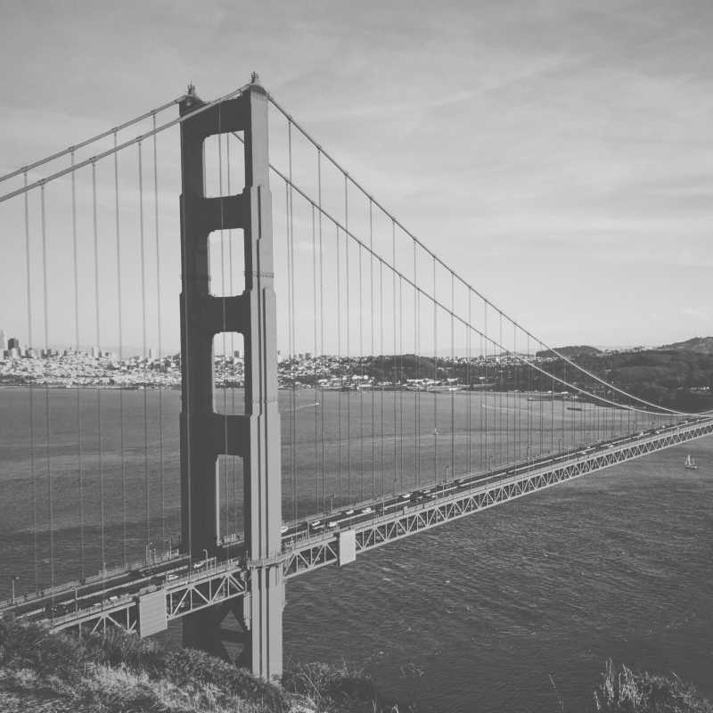

the bridge
that couldn't be built
Scroll for more

The year the Golden Gate bridge was opened
The year the Golden Gate bridge was opened
The year the Golden Gate bridge was opened
The year the Golden Gate bridge was opened
More than 10 years in planning due to formidable opposition, but only four years in actual construction, the Golden Gate Bridge brought the communities of San Francisco and Marin counties closer together.
More than 10 years in planning due to formidable opposition, but only four years in actual construction, the Golden Gate Bridge brought the communities of San Francisco and Marin counties closer together.
Opened in 1937, the bridge was built at a cost of $35 million in principal and $39 million in interest and 11 workers’ lives. The single-suspension span is anchored by twin towers that reach skyward 746 feet, and was once taller than any building in San Francisco.
To support the suspended roadway, two cables, each more than 7,000 feet in length and both containing 80,000 miles of wire stretch over the top of the towers and are rooted in concrete anchorages on shore.
Golden Gate
Golden Gate
Abstract view
Fog on Golden Gate
Marin Headlands view
Marin Headlands view